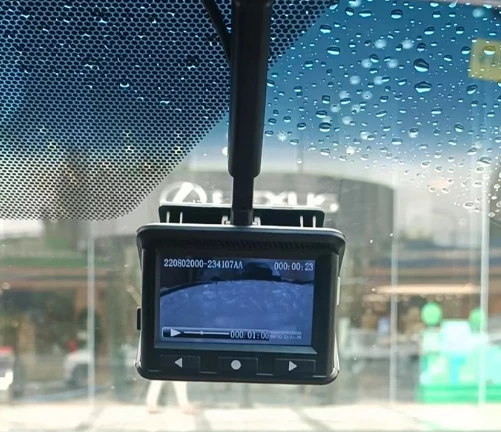

VT-Cockpit® / Intelligent Cockpit
Digital Video Recorder
Product Overview
DVR provides in-vehicle road recording and can be integrated with cabin electronics for daily driving, event review and vehicle-specific programs.

Capabilities
Records the forward road view for daily review and event reference.
Adapts to vehicle interiors and cabin electronics architectures.
Designed for in-vehicle use and production integration.
Product Details
VT-DVR provides in-vehicle road recording and playback. It can be deployed independently or integrated with cabin electronics or the ADAS forward-view system according to project requirements.
The solution is designed for daily road-image retention and event review. Camera location, recording and playback strategy, display and interaction interfaces can be defined by vehicle programme and combined with other perception products.
Continuously records the forward road scene for daily viewing and event review.
Can be adapted to cabin electrical architecture, interior packaging and display requirements.
Camera location, recording strategy and interaction can be specified by vehicle programme.
Can work with AVM, FVC and DMS products as part of an integrated visual solution.
Applications
Recording and playback can be integrated into the interior mirror, central display and cockpit head unit to reduce additional visible hardware.
For long-duty buses and trucks, road-image retention supports daily fleet management and event review.
Can combine with AVM, FVC and DMS products, with electrical architecture, camera location and interaction customised by programme.
Related Products
Camera Monitoring System
Driver Monitoring System
Occupant Monitoring System
Streaming Rearview Mirror
Head-Up Display
Smart Lighting
Features and configurations can be adapted to vehicle and project requirements. The final solution is subject to project evaluation.